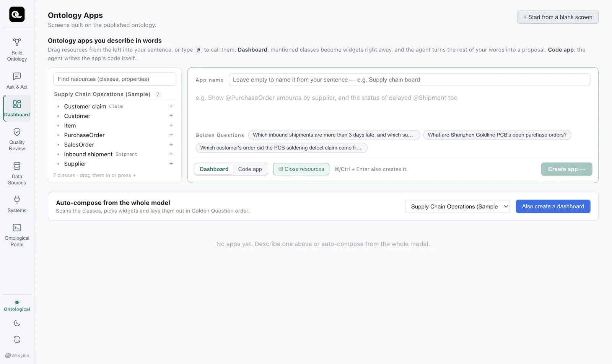
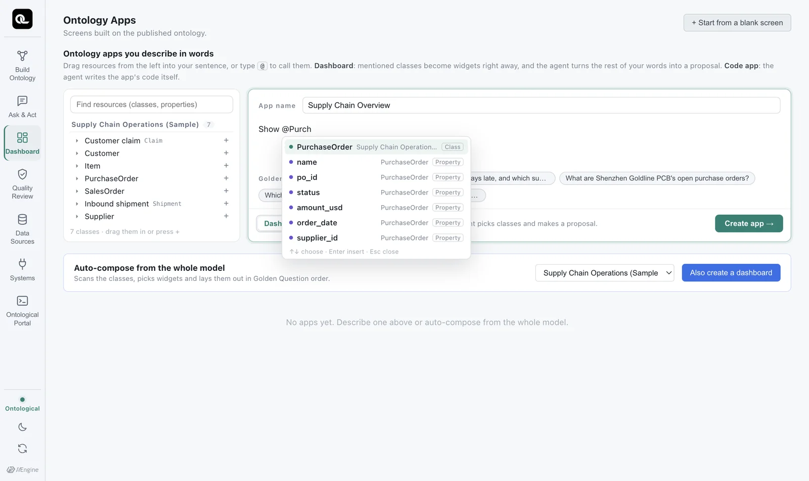
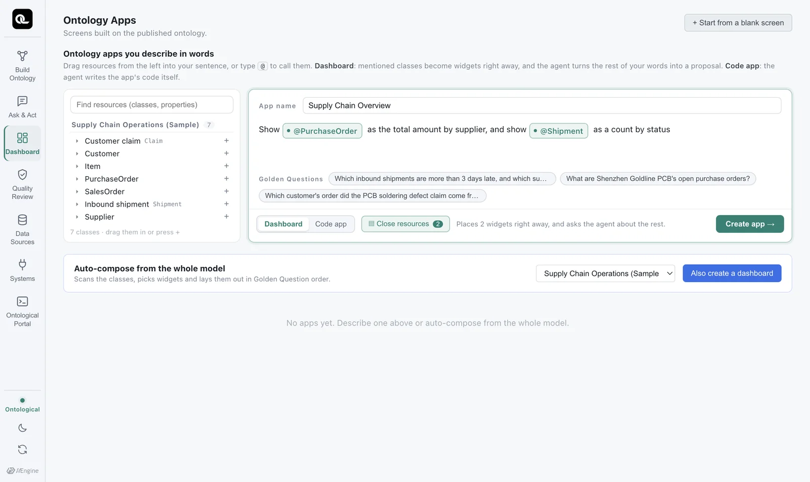
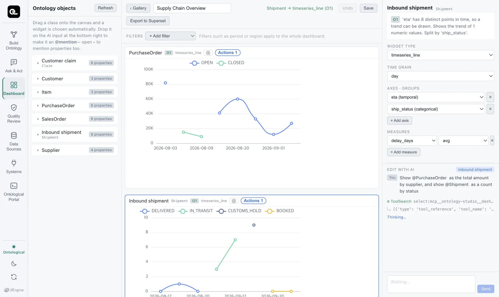
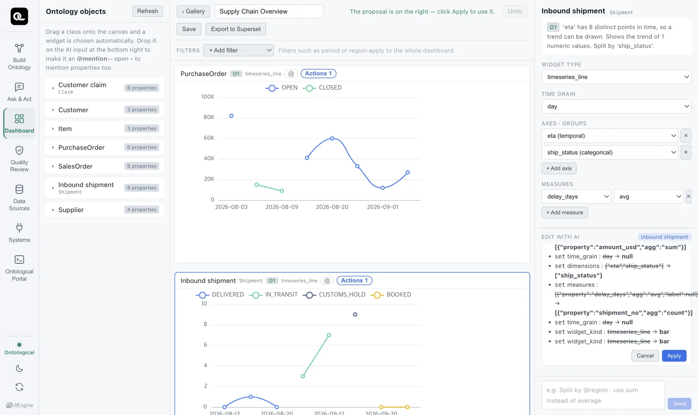
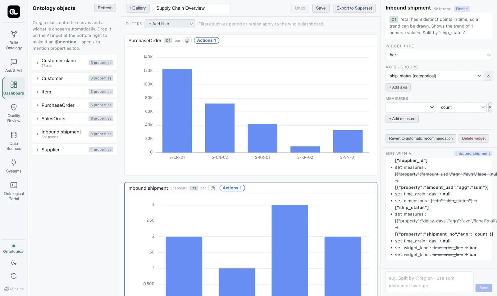

In Ontology Apps, you build a dashboard by @mentioning classes and properties. The engine picks default widgets, the agent proposes changes that fit your request, and you review and apply them.
Two kinds of apps#
You can build apps on the same ontology in two ways.
| Dashboard | Code app | |
|---|---|---|
| How you build it | Combine widgets (charts, tables) | The agent writes HTML and JavaScript code |
| Speed | About 1 second for widgets, tens of seconds for a proposal | 1–3 minutes |
| Freedom | Within the available widgets | Anything (layout, interaction) |
| Editing | Widget settings, or in plain words | In plain words, or edit the code directly |
| Covered in | This chapter | Chapter 18–Chapter 19 |
The app builder screen#
Open the Ontology Apps card on Home. At the top is Ontology apps you describe in words.

| Area | Contents |
|---|---|
| Resource tree (left) | The published ontology's model › class › property. You can drag items into your sentence. |
| Input box | Describe the screen you want. Type @ to see class and property suggestions. |
| Example chips | This ontology's Golden Questions. Click one to put it in the input box. |
| Dashboard / Code app | Choose what to build. |
| Gallery | The apps you have made |
Try it — Supply Chain Overview#
- Enter
Supply Chain Overviewas the app name and choose Dashboard. - In the input box, type
Showand then@Purch. Suggestions appear. Use ↑↓ to pickPurchaseOrderand press Enter. - Continue with
as the total amount by supplier, and show. - Drag
Shipmentfrom the tree on the left into the sentence, then typeas a count by status. - Click Create app.

Each resource you pick stays in the sentence as a chip. Neither you nor the agent can mistake what it refers to. One Backspace deletes the whole chip.

Engine first, then the agent#
When you click Create app, two things happen in order.
1. The engine picks widgets right away (about 1 second). For each class you mentioned, it looks at the data (property types, kinds of values) and picks a suitable widget. This step follows rules, so it always gives the same result. Here, it first placed charts of trends by date.

2. The agent turns the rest of the sentence into a proposal. “Total amount by supplier” and “count by status” go to the agent. The agent reads the current layout and suggests what to change as a proposal (diff) (under a minute in our tests). The Edit with AI panel on the right shows the changes, with old values struck through.

3. You apply it. A proposal takes effect only when you click Apply. If you don't like it, don't apply it — just ask in plain words for a different change.

Keep editing#
- Mention a widget: Click
@at the top of a widget to add it to the input box as a chip. Then continue, for example “Make the @Shipment widget a pie chart”. - Set it yourself: Select a widget to see its type, axis and metric settings on the right. There is also Revert to automatic recommendation.
- Filters: Use + Add filter at the top to set a condition for the whole dashboard.
- Linked selection: Click a bar and its value becomes the dashboard's selection, applied as a filter to related widgets.
- Save: Save at the top right. Undo reverts the proposal you just applied.
When you switch between the light and dark themes, the chart axes and text colors change too.
Exercises
- Build a Customer Quality Overview dashboard that shows
@Claimas a count by severity and@SalesOrderas total quantity by customer. - Mention one widget and ask to change it into a table.
- Guess what would change if you chose Code app instead of Dashboard, then go on to the next chapter.
Hints
- For example: “Show @Claim as a count by severity, and @SalesOrder as total qty by customer”. You can mention properties too, like
@severity(expand a class in the tree to see its properties). - Click
@at the top of the widget and type “Change it to a table”. When the proposal appears, click Apply.